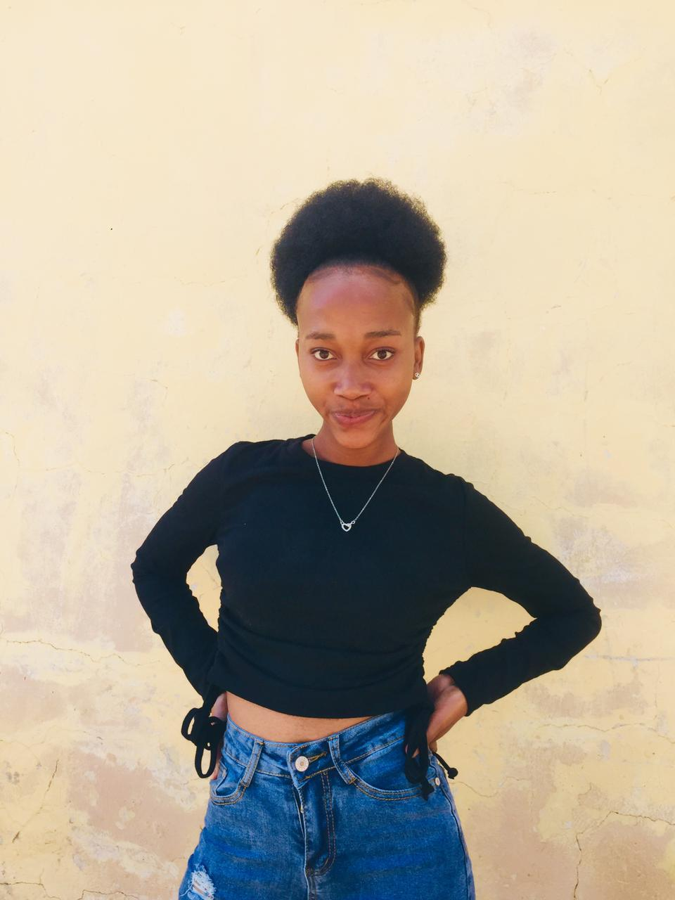

Home Page
I am Chanzonay Adams, and I am the founder of this website. The business I choose is a small business currently growing big (Juu Walk), the reason i choose this business is because I see it prospering and growing big. Where I stay there are not alot of tar roads but sand road and (Juu Walk) is doing good by helping the community keep thier shoes clean and repaired
Juu Walk

Solomon Junior Moatshe
Thej founder of Juu walk is an inspired young South Afican male know by the name of Solomon Junior Moatshe. He created the business by invisoning the impact it would have on the community. Juu walk is a sneaker and shoe care business that provides washing your shoes and repairing when needed its also comes with pros such as free pick up and delivery.